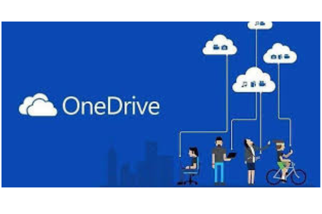

OneDrive

O Que é o OneDrive?
Trata-se de um serviço de armazenamento e compartilhamento de arquivos em nuvem da Microsoft fornecido com o Office 365 e o SharePoint.Usuários dentro e fora da empresa podem acessar, alterar e compartilhar documentos, também é possível utilizá-lo por apenas 01 usuário.
Podem-se armazenar e acessar arquivos de qualquer lugar, em qualquer dispositivo, e recuperá-los de qualquer lugar também. O OneDrive for Business é diferente do OneDrive, pois destina-se a armazenar arquivos relacionados ao local de trabalho ou à escola, OneDrive é para armazenar documentos pessoais, há recursos e limitações entre os produtos.
Os principais recursos do OneDrive for Business incluem armazenamento em nuvem, capacidade de compartilhar arquivos e pastas com colegas de trabalho, controle de documentos por administradores e sincronização de conteúdo de uma biblioteca para a plataforma.
Prós
- Acesso a arquivos de qualquer lugar. Visualizar, compartilhar e editar arquivos de qualquer lugar, em qualquer dispositivo – em casa, no escritório ou em trânsito com aplicativos para dispositivos móveis.
- Edição de documentos em modo colaborativo. O OneDrive for Business permite alterações contínuas e em tempo real de documento Microsoft Office por vários usuários dentro e fora de sua organização.
- Interface amigável. Interface amigável e sincronização rápida com computadores reduz a curva de aprendizado facilitando a adoção da solução por parte de todos.
- Aplicação móvel. Com aplicativos para iPhone e Andoid, é possível fazer upload, editar e compartilhar arquivos na nuvem enquanto está em trânsito, tudo com segurança para proteger as informações e os dados da empresa.
- Compatibilidade com Windows e Mac. O OneDrive for Business é compatível com os sistemas operacionais Windows e Mac. Também é implantável como uma plataforma local, instalada diretamente nos servidores existentes da sua empresa.